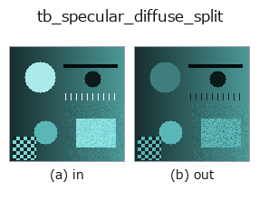

typed op• データ種: rgbimage → rgbimage
• 呼び出し: fullseye.apply(img, "tb_specular_diffuse_split", a=0.5, b=0.5) (2-D は 1 画像 + 2 スカラつまみ a,b∈[0,1] のモデル)

*図は合成の入力 128×128 で実際に走らせた出力。左が入力、右が出力。点群は上から見た散布(明るさ = z)、1-D 列は折れ線、体積は z 方向の最大値投影、動画は中央フレーム、複素画像は振幅、絵にならない返り値は値そのもの。*
*つまみ a は出力を変えない(実測: 0.1 / 0.5 / 0.9 で同一)。*
*つまみ b は出力を変えない(実測: 0.1 / 0.5 / 0.9 で同一)。*
段階(前置きの op → この op。左から順):
▸ tb_specular_diffuse_split: 段階の図 (docs サイト)
別の画像でも(合成シーン / 写真 / 硬貨。上段が入力、下段がその出力。つまみは既定):
▸ tb_specular_diffuse_split: 別の画像での出力 (docs サイト)
線形RGB画像を拡散反射（diffuse, body reflection）成分と鏡面反射（specular, interface reflection）成分に分離する。→ (diffuse, specular)、いずれも (H, W, 3)。
> 以下の詳細説明は原文のままです —— 要約と見出しは訳出済み。
Shafer's dichromatic reflection model writes the radiance of a dielectric as I(x) = m_d(x) * L(x) + m_s(x) * G: a body term carrying the surface colour L and an interface term carrying the illuminant colour G. The specular part therefore occupies a single direction in RGB, and separating it is a projection with a closed form — no iteration, no optimisation, no learned prior.
Two regimes, chosen by *body_rgb*:
• body_rgb given — a (3,) colour or an (H, W, 3) map. Each pixel solves the 3-equation, 2-unknown least-squares system exactly. This is the textured-surface path: on a synthetic image built from a known (m_d, m_s) it returns them with a maximum absolute error of 4.0e-15 for a uniform body colour and 2.9e-15 for a per-pixel colour map (measured in tests/test_specularity.py).
• body_rgb omitted — one material is assumed. The illuminant-orthogonal part of the image is then exactly rank one, so the body direction is its leading singular vector; the unobservable component of L along G is fixed by requiring m_s >= 0 with the minimum over the image equal to zero. Maximum absolute error 5.0e-16 on the same synthetic image. At least one lit pixel must be specular-free — see below, this is the assumption that actually bites.
*illuminant_rgb* is a direction; only its orientation matters and it is unit-normalised internally. (1, 1, 1) is the white-balanced case. Get it
from illuminant_from_dichromatic_planes when you have two or more materials in frame.
Two guards protect the uniform-body path, and both are needed — the adversarial pass found the first one alone lets a two-material image
through:
• *max_rank_ratio* — the second singular value of the illuminant-orthogonal part over the first. Measured on the synthetic bump: 4.6e-16 noiseless, 0.0175 at 0.5% Gaussian noise, 0.0348 at 1%, 0.0694 at 2%, 0.173 at 5%; a two-material image with cyclically permuted albedos gives 0.574. The default 0.1 sits between the 2% and 5% noise measurements. None disables it.
• *max_negative_frac* — the fraction of pixels whose fitted body coefficient comes out negative, which cannot happen for one material. This is what catches the case the rank test misses: two albedos whose illuminant-orthogonal chromaticities are nearly anti-parallel still span one line, and that image measured 0.0815 on the rank test — under the default threshold, i.e. accepted — while 50% of its pixels fit a negative body coefficient. With both guards disabled that image returns a diffuse map wrong by 1.03 in absolute radiance on an image whose maximum is 0.99, with no exception and no NaN. None disables it.
Both guards bound gross violations only, and that is not fixable by a better threshold. A texture whose chromaticity drifts *along* the body direction rather than away from it measured a rank ratio of 0.0641 — under the default — with every body coefficient positive, so neither guard fires, and the returned diffuse map was wrong by 0.198. It cannot be separated from noise by any threshold, because it is the same measurement: 1% Gaussian noise on that scene gives 0.0348 and 2% gives 0.0694, and the texture sits between them. The answer for a surface that might be textured is body_rgb, not a cleverer number here.
Honest limits. (1) *Without body_rgb, one lit pixel must be specular-free.* The rendered-lobe measurement shows exactly what it costs when none is: for a Blinn-Phong highlight on a Gaussian bump the maximum diffuse error is 6.5e-11 at shininess 200 (where the lobe tail underflows to 9.1e-11), 0.0019 at shininess 48 (tail 0.0026) and 0.175 at shininess 8 (tail 0.243) — the error *is* the darkest highlight in the frame, because that is the constant the constraint cannot see. (2) *The known-body path is conditioned by 1/(1 - b^2) where b is the cosine between the body and illuminant colours.* A texture reaching |b| = 0.99999 (an almost neutral grey under a white lamp, amplification 6.4e+04) measured 5.9e-12 against 2.9e-15 for the same texture kept at |b| <= 0.965. Near-grey surfaces are where colour-based separation is weakest, and no amount of arithmetic care changes that.
Raises ValueError: *image_rgb* is not (H, W, 3), is complex / masked / non-finite / string-typed, or exceeds MAX_PIXELS; *illuminant_rgb* is not a non-zero 3-vector; the image is identically zero; the image has no component orthogonal to the illuminant (body colour parallel to it, so no split exists); either guard above fires; *body_rgb* has the wrong shape, a zero-length colour, or is parallel to the illuminant.
Returns (diffuse, specular) with diffuse + specular == image_rgb to machine precision in both regimes: measured 1.1e-16 on the uniform-body route, which forms the diffuse as image - specular, and 2.1e-15 on the known-body route, which forms both parts from the solved coefficients and so accumulates a little more.
Typed bridge of the specular op specular_diffuse_split into the 2-D evolution registry: the same implementation, called under the op(v, a, b) convention. a drives max_rank_ratio (default 0.1) and b drives max_negative_frac (default 0.02).
• サンプルデータ カタログ(DL URL / ライセンス) — 2-D は skimage.data(BSD/public)+ 合成、3-D は実データ源(Stanford/PDS 等)の DL URL。
• 演算子の来歴・参考文献 — この op 族の元になった研究/手法の出典。
下のプログラムは実際に走ることを確かめてある(図と同じ入力)。Studio のヘルプではこのブロックがボタンになり、その場で読み込んで実行できる。
img_to_rgb 0.50 0.50 tb_specular_diffuse_split 0.50 0.50
次の例は元の台帳 op specular_diffuse_split を呼ぶもの。この橋渡し op は同じ実装を fn(v, a, b) 規約に合わせただけなので、挙動はそのまま当てはまる(呼び出し形だけ違う)。
• specular_photometric — py -3.11 examples/specular_photometric.py
rgbimage を入力に取れる)identity · tb_wetness · tb_sensor_capture · tb_specular_coefficient_map · tb_specular_free_transform · tb_rgb_to_quaternion
typed)tb_points_to_voxel · tb_estimate_point_normals · tb_iss_keypoints · tb_project_points · tb_render_point_depth · tb_statistical_outlier_removal · tb_radius_outlier_removal · tb_voxel_grid_downsample
*Provenance: ops.py — 2D operator registry. この per-op ノートは tools/opdocs.py md が自動生成(手編集しない)。*
© 2026 Kazufumi Furuse — Fullseye operator documentation. Licensed under Apache-2.0.